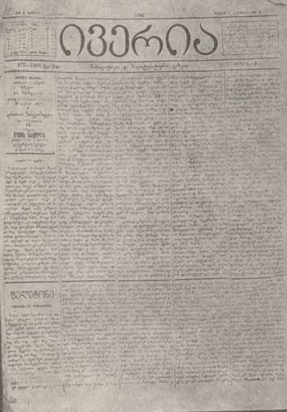
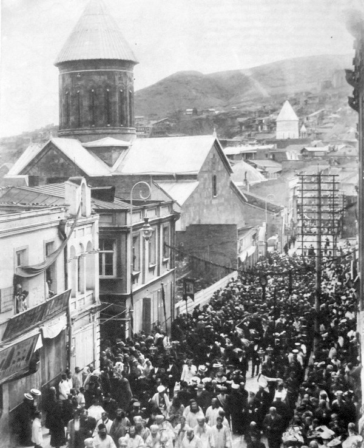

The Free Encyclopedia
From Wikipedia, the free encyclopedia

Prince Ilia Chavchavadze (Georgian: ილია ჭავჭავაძე; 8 November 1837 – 12 September 1907) was a Georgian public figure, journalist, publisher, writer and poet who spearheaded the revival of Georgian nationalism during the second half of the 19th century and ensured the survival of the Georgian language, literature, and culture during the last decades of Tsarist rule. He is Georgia's "most universally revered hero"[1] and is regarded as the "Father of the Nation."[2]
He was a leader of contemporary youth intellectual movement named "Tergdaleulebi". They spread modern and European liberal ideals in Georgia. Ilia Chavchavadze founded two modern newspapers: Sakartvelos Moambe and Iveria. He played an important role in the creation of the first financial structure in Georgia – Land Bank of Tbilisi, with the aim of protecting Georgian land from being bought by Armenian bourgeoisie. During 30 years he was a chairman of this Bank, through which he financed and promoted most of the cultural, educational, economical and charity events which took place in Georgia.
Continuing the educational work started in Constantinople by Fr. Peter Kharischirashvili and the Servites of the Immaculate Conception, Ilia Chavchavadze also participated in the foundation of "Society for the Spreading of Literacy among Georgians" – an organization that established schools that taught in the Georgian language. This was instrumental in halting the Russification policy of Russian Empire in Georgia.
Inspired by the contemporary liberal and nationalist movements throughout Europe, Chavchavadze directed much of his efforts toward awakening national and liberal ideals among Georgians. Chavchavadze was the author of numerous articles that were published in his newspaper Iveria, as well as in other periodicals that were published in Georgia. In his articles, Chavchavadze discussed literature, education, theater, politics, economics, current affairs. His views on self-government, judicial system, social issues, human rights, women's rights, and civic activism were ahead of their time and contributed to Georgia's sense of national identity. He was a devoted protector of the Georgian language and culture from Russification. He coined the phrase "Ena, Mamuli, Sartsmunoeba" ("Language, Homeland, Faith"), which is widely acknowledged slogan of Georgian nationalism.[3][4]
During the 1905 Russian Revolution Chavchavadze was elected as a representative of the Georgian nobility to the imperial State Council. However, he stated that he would represent the whole nation, not just one particular social class. He advocated against capital punishment and lobbied for Georgian autonomy.
His most important literary works were: The Hermit, The Ghost, Otaraant Widow, Kako The Robber, Happy Nation, Letters of a Traveler and Is a man a human?!.
Chavchavadze was killed in Tsitsamuri, near Mtskheta, by a gang of assassins. Details of his murder are still matter of debate. His legacy earned him the broad admiration of the Georgian people. In 1987 he was canonized as Saint Ilia the Righteous (წმინდა ილია მართალი, tsminda ilia martali) by the Georgian Orthodox Church. Today, Georgians revere Chavchavadze as The Uncrowned King (უგვირგვინო მეფე, ugvirgvino mepe) and the "Father of the Nation."
Chavchavadze as a 1st year gymnasium student
Ilia Chavchavadze was born in Qvareli, a village in Kvareli,[5] located in the Alazani Valley, in the Kakheti province of Georgia, which was part of the Russian Empire at that time. Ilia was a tavadi, the Georgian title of prince. It is thought that the noble Chavchavadze family came from the Pshav-Khevsureti region of Georgia, and, in 1726, King Constantine II granted the Chavchavadze family the rank of Prince in recognition of their knighthood and valor to the nation. This resulted in the family moving and settling in the Alazani Gorge in Kakheti.[citation needed]
Ilia was the third son of Grigol Chavchavadze and Mariam Beburishvili. Grigol, like his father and his famous ancestors, had a military background. He, along with the local militiamen protected the village from numerous Dagestani invasions. This can be seen in the architecture of the Ilia Chavchavadze museum house in Kvareli, incorporating a Medieval castle style in the two-storey castle in the yard, which was designed to protect the house during invasions.[citation needed]
Chavchavadze was educated at the elementary level by the deacon of the village before he moved to Tbilisi where he attended the prestigious Academy for Nobility in 1848. However, from an early age, Ilia was influenced by his parents who were highly educated in classical literature, Georgian history and poetry. From his parents, Ilia learned the inspiring stories of Georgian heroism in classical historical novels. In his autobiography, Ilia refers to his mother, Princess Mariam Chavchavadze, who knew most Georgian novels and poems by heart and encouraged her children to study them. Ilia also described the influence of the deacon's storytelling, which gave him an artistic inspiration, later applied in his novel writing.[citation needed]
Ilia's mother, Mariam, died on 4 May 1848, when Ilia was ten years old, and his father asked his sister, Makrine, to help bring up the children. Aunt Makrine had a significant impact on Ilia's life, because, after 1852, when Ilia's father Grigol died, she was the only remaining caretaker of the family.[5]
In 1848, after the death of Princess Chavchavadze, Ilia was sent to Tbilisi by his father to begin his secondary education.[5] Ilia attended a private school for three years before he entered the 1st Academy of Tbilisi in 1851. Soon after, Ilia's father died and Aunt Makrine looked after the family. His secondary school years were very stressful, due to his father's death. However, the Chavchavadze family suffered another devastating blow when Ilia's brother, Constantine, was killed during the Dagestani raid on Kakheti. Ilia expressed his anguish and grief in one of his first short-poems called Sorrow of a Poor Man. In addition to his personal problems, the political situation in Georgia worsened under the harsh authority of the Russian Empire, which played a destructive role to the nation and its culture.[citation needed]
Ilia Chavchavadze during his student years
After graduating from the academy, Ilia decided to continue his education at the University of St. Petersburg, Russia. Before leaving for St. Petersburg, Ilia composed one of his most remarkable poems, To the Mountains of Kvareli in the village of Kardanakhi on 15 April 1857, in which he expressed his lifelong admiration for the Greater Caucasus Mountains and his sorrow at leaving his homeland.[citation needed]
That same year, Ilia was admitted to the University of St. Petersburg. During his student years, numerous revolutions sprang up in Europe which Ilia observed with great interest. Ilia's attention focused on the events in Italy and the struggle of Giuseppe Garibaldi, whom he admired for many years. While in St.Petersburg, Ilia met Princess Catherine Chavchavadze, from whom he learned about the poetry and lyrics of the Georgian romantic Prince Nik'oloz Baratashvili. Due to the harsh climate in St Petersburg, Ilia became very ill and returned to Georgia for several months in 1859.[citation needed]
Ilia finally returned to Georgia after the completion of his studies in 1861. During his journey back, Ilia wrote one of his greatest masterpieces, The Traveler's Diaries, in which he outlines the importance of nation-building and provides an allegorical comparison of Mt. Kazbegi and the Tergi River in the Khevi region of Georgia.[citation needed]
Chavchavadze's house in Tbilisi.
Newspaper "Iveria" (Iberia) founded and edited by Chavchavadze during his political career. The newspaper focused on the national liberation movement of Georgia in the late 1800s.
Ilia's main political and social goals were based on Georgian nationalism. He urged nationwide resistance to the House of Romanov's policy of forced Russification, the revival of the Georgian language, and the cultivation of Georgian literature. Even more subversive from the State's perspective, Chavchavadze also pushed for reviving the independence of the Georgian Orthodox Church from the control of the Russian Tsar and the Holy Synod.
In the 1860s, "Tergdaleulebi", the new generation of Georgian intellectuals, educated at Russian universities and exposed to European ideas,[6] promoted national culture against assimilation by the Imperial center. Led by Ilia Chavchavadze, their program attained more nationalist colors as the nobility declined and capitalism progressed, further stimulated by the rule of the Russian bureaucracy and economic and demographic dominance of the Armenian bourgeoisie in the capital city of Tbilisi. Chavchavadze prominently founded "The Bank of the Nobility" of Tbilisi, with the aim of protecting Georgian land from being sold off by poor Georgian nobles to rich Armenian bourgeoisie. In his work Outcrying Stones, Chavchavadze denounced Armenians for falsifying Georgian history, buying up Georgian land and appropriating Georgian churches, as well as indebting poor Georgian peasant families. Chavchavadze attacked Armenians for their mercantilism and condemned them in his newspaper Iveria for "eating the bread baked by someone else or drinking that which is created by another's sweat", as well as being "sly moneylenders and unscrupulous traders".[7] He also created slogan "Language, Homeland, Religion", which served as a motto of Georgian nationalism. Chavchavadze and his associates called for the unity of all Georgians and put national interests above class and provincial divisions. Their vision did not envisage an outright revolt for independence, but demanded autonomy within the reformed Russian Empire, with greater cultural freedom, promotion of the Georgian language, and support for Georgian educational institutions and the national church, whose independence had been suppressed by the Russian government.[8]
As the number of supporters for Chavchavadze's ideas grew, so did opposition to Chavchavadze from both the Bolshevik and Menshevik factions of the Russian Social Democratic Labour Party, and particularly from Noe Zhordania. The SD's main aims were focused on toppling the Tsarist autocracy and upon an Atheist and Marxist transformation of a still unified Russian Empire. This did not include the revival of the Georgian Church, State, language, or of a distinctly Georgian identity. Ilia was viewed as bourgeois and as an old aristocrat who failed to realize the importance of the revolutionary and Atheist future.[citation needed]
In addition to his works described above, Chavchavadze was also the founder and chairman of many public, cultural and educational organizations (Society for the Spreading of Literacy Among Georgians, "The Dramatic Society", "The Historical-Ethnographical Society of Georgia", etc.). He was also a translator of British literature. His main literary works were translated and published in French, English, German, Polish, Ukrainian, Belarusian, Russian and other languages. Between 1906 and 1907, he was a member of the State Council (Gosudarstvennaya Duma) in Russia. His eclectic interests also led him to be a member of, among others, the Caucasian Committee of the Geographical Society of Russia, the Society of Ethnography and Anthropology of Moscow University, the Society of Orientalists of Russia and the Anglo-Russian Literary Society (London).[citation needed]
Prince Chavchavadze briefly acted as a literary mentor to a young Joseph Stalin, who was then an Orthodox seminarian in Tbilisi.[citation needed] According to historian Simon Sebag Montefiore: "The Prince was sufficiently impressed to show the teenager's work to his editors. He admired Stalin's verse, choosing five poems to publish – quite an achievement. Prince Chavchavadze called Stalin the 'young man with the burning eyes.'"[9]
Shot trajectory of Ilia Chavchavadze's assassination
Prince Chavchavadze's funeral in Tbilisi
After serving as a member of the Upper House in the first Russian Duma, Ilia decided to return to Georgia in 1907. On 28 August 1907, while travelling with his wife Olga from Tbilisi to Saguramo, Prince Ilia Chavchavadze was ambushed and murdered by a crew of six assassins in the small village of Tsitsamuri, near Mtskheta.[citation needed]
The Prince's murder was seen as a national tragedy and was mourned by all classes of Georgian society. Prince Akaki Tsereteli, who was suffering from serious health problems at the time, spoke at the funeral and dedicated an outstanding oration to Ilia: "Ilia's inestimable contribution to the revival of the Georgian nation is an example for future generations".[10] Famous Georgian poet Vazha-Pshavela said: "Ilia's murderers would have killed Georgia if they could".
Following the unfortunate passing of Ilia, the news coverage pertaining to his assassination was primarily limited to a single newspaper called Isari (ისარი).[11] Notably, Isari, despite being a relatively small publication, provided extensive coverage of the incident. Surprisingly, larger mainstream newspapers did not report on the intricate details surrounding Ilia's assassination.[citation needed]
In 1907, the Tsarist authorities launched investigation into Chavchavadze's death and arrested four suspects: Giorgi Khizanishvili, Ivane Inashvili, Gigola Modzghvrishvili and Tedo Labauri. One suspect (Gigla Berbichashvili, the head of the crew) went into hiding in Iran, while another one (Pavle Aptsiauri) died during clashes with the police. According to investigation, during the incident Chavchavadze appealed to the crew: "Do not shoot, I am Ilia", while Gigla replied: "That's why we have to shoot you". In 1909, according to the decision of the Stolypin tribunal, the entire gang was sentenced to capital punishment. Following the October Revolution, Gigla Berbichashvili returned to Georgia in 1921 and worked in the various positions within the Soviet Georgian government. In 1936, the investigation was launched against him for participating the murder of Ilia Chavchavadze. In December 1941, he was tried in the court, which sentenced him to capital punishment in January 1942. However, this was later changed to 10 years imprisonment.
The assassination of Ilia Chavchavadze remains controversial today. The Tsarist investigation concluded that the murderers were part of Bolshevik "Red Squad", while the Soviet investigation blamed the Tsarist secret police and administration for being involved in the assassination. The unofficial versions mostly blame Bolsheviks as well as Mensheviks for orchestrating the murder.[12][13][14][15] Chavchavadze had publicly and very successfully undermined the growth of both Bolshevik and Menshevik factions of the Social Democratic Labour Party.[14] Furthermore, Prince Chavchavadze's Orthodox Christian and socially conservative vision for Georgian nationalism and his enormous popularity and influence upon the Georgian people may have been additional causes. Historian Simon Sebag Montefiore suspects, while Prince Chavchavadze's assassination may have been a rare instance of cooperation between the Bolshevik and Menshevik factions of the SDLP, that Joseph Stalin may have been at least tangentially involved in the murder of his former publisher and literary mentor.[citation needed]
According to Montefiore: "The Bolshevik position in Georgia was undermined by the assassination of the hugely popular Prince Ilya Chavchavadze, in August 1907. The Bolsheviks had attacked his patriarchal vision of Georgian culture and, it was widely believed, had decided to kill him. There is some evidence that Stalin's friends Sergo Ordzhonikidze and Filipp Makharadze organized or took part in the assassination. It may be that the SDs took no part in the murder at all. Stalin always praised Chavchavadze's poetry in his old age and there is no evidence that he ordered the hit, but he was very close to Sergo and he was certainly more than capable of separating literary merit from cruel necessity: politics always came first."[16]
Monument to Chavchavadze (left) and Akaki Tsereteli (right) in front of the first Gymnasium in Tbilisi
.jpg)
The tomb of Ilia Chavchavadze at Mtatsminda Pantheon.
Ilia Chavchavadze is considered to be "the founding father of modern Georgian nation". Ilia's legacy of national awakening earned him the everlasting admiration of the Georgian people and the title of Uncrowned King of the Nation. His work was acknowledged in his lifetime, as well as Soviet period. His legacy is cherished in modern-day Georgia too. In 1937, the Soviet authorities celebrated the hundredth anniversary of Ilia Chavchavadze. During Soviet times, Chavchavadze's rejection and criticism of serfdom was particularly emphasized.
After the Soviet invasion of Georgia and the nation's annexation into the Soviet Union in 1921, Chavchavadze became for Georgian nationalists the symbol of Georgian freedom and national liberation.[citation needed] In 1987, Chavchavadze was formally canonized by the Georgian Orthodox and Apostolic Church, as "Saint Ilia the Righteous."[5] In October 1987 the Ilia Chavchavadze Society, an organisation that promoted Georgian national revival and political independence, was established by Soviet dissident intellectuals.[citation needed] In 1989, during the anti-Soviet protests in Tbilisi, the poems, novels and political beliefs of Prince Ilia Chavchavadze became a driving force behind the Georgian struggle for independence.[citation needed]
In 1998, Stephen Kinzer wrote about the widespread admiration of Chavchavadze across the political spectrum: "Today leftists in Georgia embrace Chavchavadze for his hatred of injustice, centrists love him for his nonviolent humanism, and right-wing nationalists have adopted his slogan Motherland, Language, Faith."[1] Faith, in this context, exclusively means Georgian Orthodoxy.[17]
In 2006, Ilia State University was named after Ilia Chavchavadze.[18] Various streets and avenues are also named after him, including Tbilisi's central avenue, Ilia Chavchavadze Avenue.[19] Chavchavadze's main works, including his Is a man a human?!, are taught in Georgian schools within Georgian Language and Literature classes.
Georgian Poetry: Rustaveli to Galaktion: A Bilingual Anthology. Translations by Lyn Coffin, with the assistance of Gia Jokhadze, featuring an introduction by Dodona Kiziria. Slavica, Bloomington, Indiana, 2013.
Georgische Dichter. Translated and compiled by Arthur Leist, Dresden-Leipzig, 1887 (Poems of Ilia Chavchavadze and other Georgian poets, in German)
The Hermit by Prince Ilia Chavchavadze. Translated from the Georgian by Marjory Wardrop, London: Bernard Quaritch, 1895
Chavchavadze
List of Georgian writers
History of Georgia
Ilia State University
Kinzer, Stephen (7 May 1998). "Saguramo Journal; On the Tallest Pedestal, a Man for All Georgians". The New York Times.
Kekelia, Tatia (2015). "Building Georgian national identity". In Agadjanian, Alexander; Jödicke, Ansgar; van der Zweerde, Evert (eds.). Religion, Nation and Democracy in the South Caucasus. Routledge. p. 123.
Chkhartishvili 2013, p. 192: "The main designer and contributor to the Georgian nationalist project was the eminent Georgian writer and public worker Ilia Chachcavadze (1837-1907)."Chkhartishvili 2013, p. 195: "In 1860-1880ss the premature Georgian political nationalism was replaced by fully developed Georgian cultural nationalism. As it was already mentioned, its main author was Ilia Chavchavadze who, with his co-workers, was an active part of the societal life of the 1860s."
"Martyr Ilia Chavchavadze of Georgia". Orthodox Church in America. "Tergdaleulebi" translates as "those, who have drunken the water of the Terek river", since the Terek river functions as the geographical boundary between Georgia and Russia, the term began to be used to refer to those young intellectuals who went to pursue education in Russia and brought to Georgia new ideas of modernity
Jones, Stephen F. (1993). "Georgian- Armenian Relations in 1918-20 and 1991-94: A Comparison". Armenian Review. 46 (1–4): 57–77.
Sabanadze, Natalie (2010). "Chapter 4. Globalization and Georgian Nationalism". Globalization and Nationalism: The Cases of Georgia and the Basque Country. Budapest: Central European University Press. ISBN 9789633860069.
Simon Sebag Montefiore, "Young Stalin," page 57.
David Marshal Lang, History of Modern Georgia, p. 176.
""რას სჩადიხართ!"- ეს სიტყვები მთელ საქართველოს ეკუთვნოდა". 12 September 2011.
Jones, Stephen F. (2005). Socialism in Georgian Colors: The European Road to Social Democracy, 1883-1917. Harvard University Press. p. 221. ISBN 9780674019027. Bolshevik unpopularity in Georgia was in part due to the widely held suspicion that they had been behind the murder of Ilia Chavchavadze in August 1907.
Conquest, Robert (1991). Stalin: breaker of nations. Viking. p. 42. ISBN 9780670840892. ...the Bolsheviks were suspects in the (still obscure) murder of Prince Chavchavadze, father of the Georgian cultural renaissance, on 28 August 1907: he had spoken out strongly against the revolutionary left.
Geifman, Anna (1995). Thou Shalt Kill: Revolutionary Terrorism in Russia, 1894-1917. Princeton University Press. pp. 95–96. ISBN 9780691025490.
Radu, Michael (2006). Dilemmas of Democracy and Dictatorship: Place, Time and Ideology in Global Perspective. Transaction Publishers. p. 42. ISBN 9781412821711. ...Ilia Chavchavadze, murdered by the Bolsheviks in 1907.
Simon Sebag Montefiore, "Young Stalin," page 179.
Tonoyan, Artyom (22 September 2010). "Rising Armenian-Georgian tensions and the possibility of a new ethnic conflict in the South Caucasus". Demokratizatsiya. 18 (4): 287–309.
"ILIAUNI IS THE BEST RESEARCH INSTITUTION IN CAUCASUS". ILIA STATE UNIVERSITY. Retrieved 6 January 2020.
"Ilia Chavchavadze Avenue". Tbilisi Street Name Database. Tbilisi City Hall. Archived from the original on 25 July 2011. Retrieved 28 January 2010.
de Baye, Joseph (1899). Au Nord de la chaîne du Caucase: Souvenir d'une mission (in French). Paris: Nilsson.
de Baye, Joseph (1900). Tiflis: souvenirs d'une mission (in French). Paris: Nilsson.
Chkhartishvili, Mariam (2013). "Georgian nationalism and the idea of Georgian nation" (PDF). Codrul Cosminului. 19 (2). Ștefan cel Mare University of Suceava: 189–206. Archived from the original (PDF) on 21 August 2014.
Leist, Arthur (1903). Das georgische Volk, geschildert von Arthur Leist (in German). Dresden: E. Pierson.
Lehmann-Haupt, Ferdinand Friedrich Carl (1910). Armenien, einst und jetzt: reisen und forschungen von C.F. Lehmann-Haupt; hrsg. mit unterstützung des Königlich preussischen kultusministeriums, der Averhoffstiftung und der Bürgermeister Kellinghusen-stiftung zu hamburg, der Rudolf-Virchow-stiftung zu befreundeter förderer ... (in German). Berlin: B. Behr. pp. 106–111.
Reisner, Oliver: The Tergdaleulebi: Founders of Georgian National Identity. In: Ladislaus Löb, István Petrovics, György E. Szonyi (eds.): Forms of Identity: Definitions and Changes. Attila Jozsef University, Szeged 1994, pp. 125–37
Wardrop, John Oliver (1888). The Kingdom of Georgia: Notes of Travel in a Land of Women, Wine, and Song; to which are Appended Historical, Literary and Political Sketches, Specimens of the National Music, and a Compendious Bibliography. London: S. Low, Marston, Searle & Rivington. pp. 150–152.
Sharadze, Guram (ed., 1987).Ilia Chavchavadze works, translated by Marjory and Oliver Wardrops. Tbilisi: Ganatleba, 1987. Online version at NPLG.